Original and American:
a Digital Analysis of References to Identity in Subtitles of Spanish American 19th Century Novels
Ulrike Henny-Krahmer
(University of Rostock)
Section "Digital, global, transdisziplinär: Impulse für eine transdisziplinäre Digitale Romanistik"
at the conference "Romanistentag 2021",
October 3, 2021
Slides at: https://hennyu.github.io/romtag_21/ Data at: https://github.com/hennyu/papers/tree/master/original_american_romtag21

Introduction, Corpus and Mehods
Context
- Project “Computational Literary Genre Stylistics” (CLiGS),
University of Würzburg, 2015-2020,
 https://cligs.hypotheses.org/
https://cligs.hypotheses.org/ - Dissertation "Genre Analysis and Corpus Design: 19th Century Spanish American Novels (1830-1910)"
- Bib-ACMé: Bibliografía digital de novelas argentinas, cubanas y mexicanas (1830-1910), http://bibacme.cligs.digital-humanities.de/
- Conha19: Corpus de novelas hispanoamericanas del siglo XIX, https://github.com/cligs/conha19
Identity labels (1)
|
courtesy of HathiTrust, source: https://catalog.hathitrust.org/Record/100517869 |
courtesy of HathiTrust, source: https://catalog.hathitrust.org/Record/100327394 |
Identity labels (2)
|
Internet Archive, digitized by Google, source: https://archive.org/details/lacampanadelata00rosagoog |
courtesy of HathiTrust, source: https://catalog.hathitrust.org/Record/011638496 |
Relevance of the topic
- Spanish America: struggle for independence in the 19th century
- process of nation building
- development of a cultural identity
- role of the novel in this process (Brushwood 1966, Sommer 1993, Lindstrom 2004) -> use of identity labels in subtitles -> no systematic analysis so far
Bibliography and corpus
|
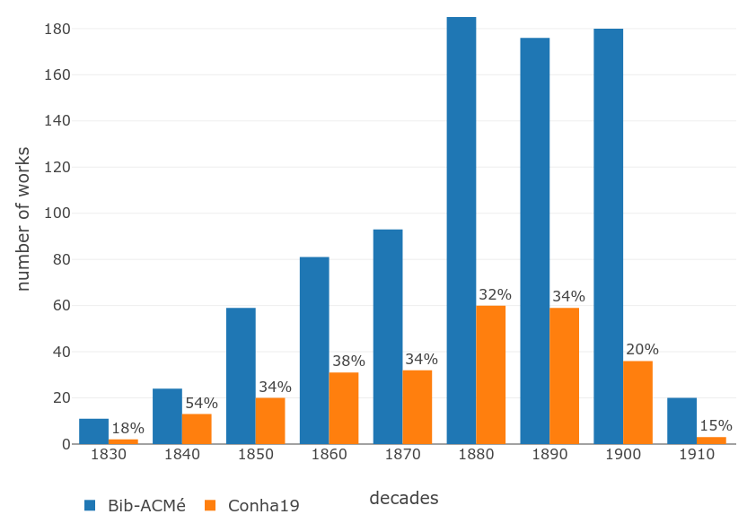
Bib-ACMé & Conha19 |
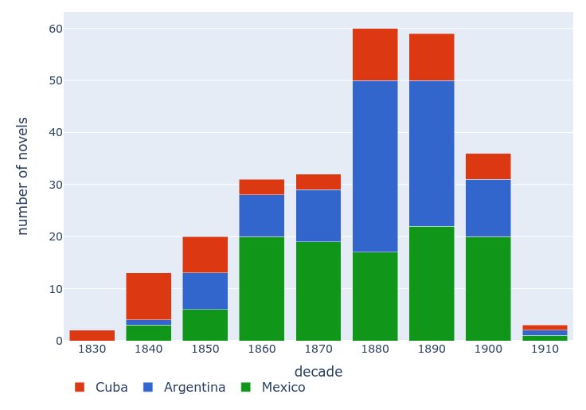
Conha19 |
Codification of subgenre labels
- in TEI
- by work (= all editions)
- only explicit historical labels
- normalization
e.g. of "novela histórica original", "novela de costumbres mexicanas"
-> "novela histórica", "novela original", "novela de costumbres", "novela mexicana" - categorization (theme, mode, literary current, identity)
- grouping
e.g. "novela camagüeyana" -> "novela cubana"
Questions
- How many identity labels of which type are there?
- Do they correlate with other levels of genre such as thematic subgenres or literary currents?
- Are they connected to certain extra-textual or textual characteristics of the texts (e.g. period of publication, geographic setting, text style)?
Methods
- Analysis on the levels of metadata and text
- Statistical charts
- Contrastive analyses (Burrows 2007, Craig and Kinney 2009, Hoover 2013)
- Stylo (Eder et al. 2016)
Results and Discussion
Results: identity labels
novels with identity labels: Bib-ACMé: 273 (33%), Conha19: 101 (39%)
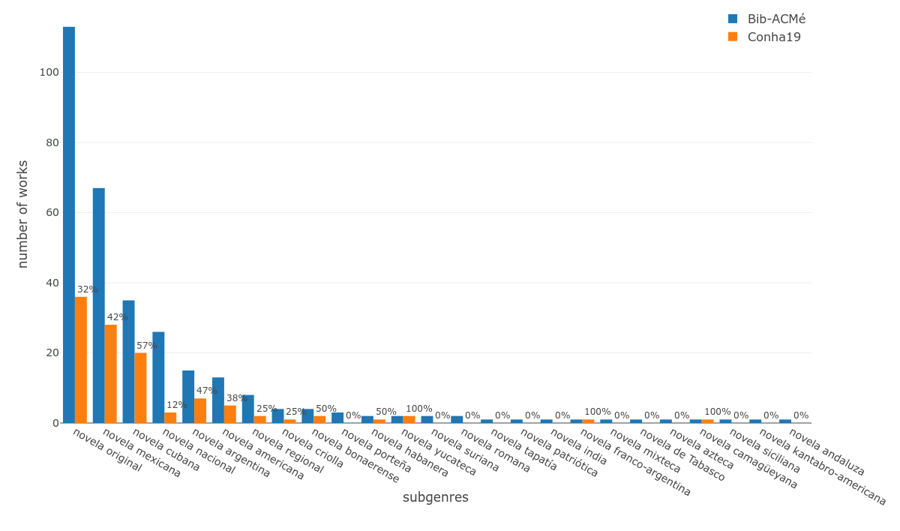Analysis: identity labels over time
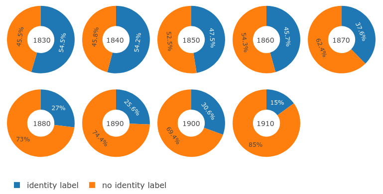Works with an identity label, by decade
Groups of identity labels
|
Bib-ACMé: 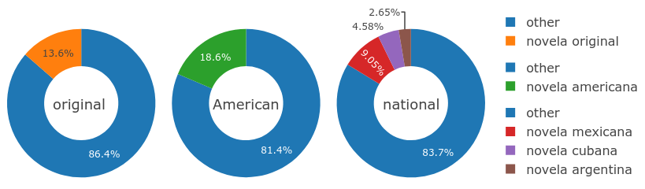Conha19: 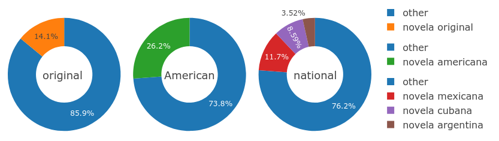 |
Analysis: novela original
over time and by country (Bib-ACMé)
| 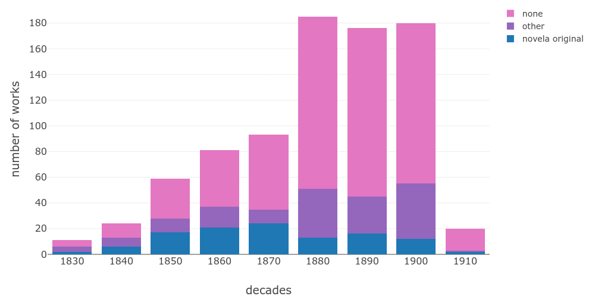 |
time: + early |
| 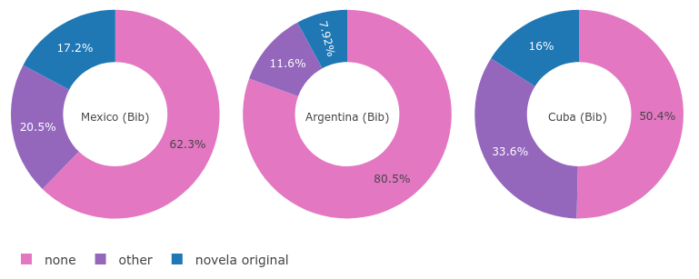 |
country: + Mexico + Cuba - Argentina |
Analysis: novela original
by subgenre and literary current (Bib-ACMé)
| 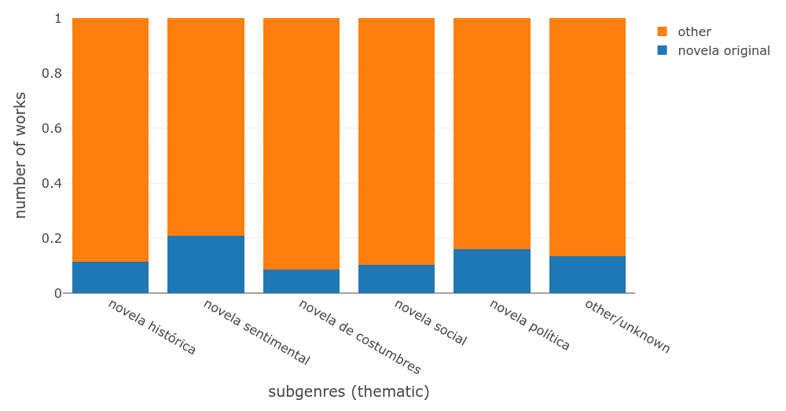 |
subgenre: + sentimental + political |
| 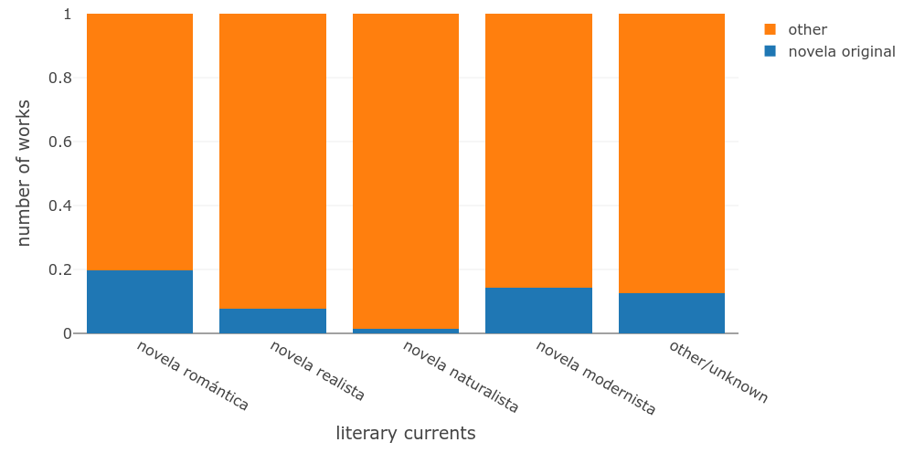 |
literary current: + romantic + modernist |
Analysis: novela original
continent and time period of setting (Conha19)
| 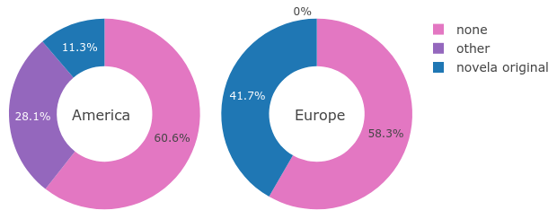 |
continent of setting: + Europe |
| 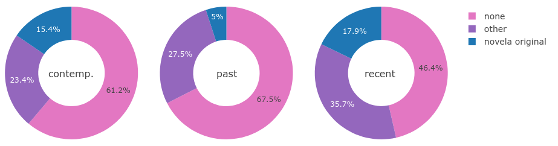 |
time period of setting: + recent past + contemporary - past |
Analysis: novela original
| 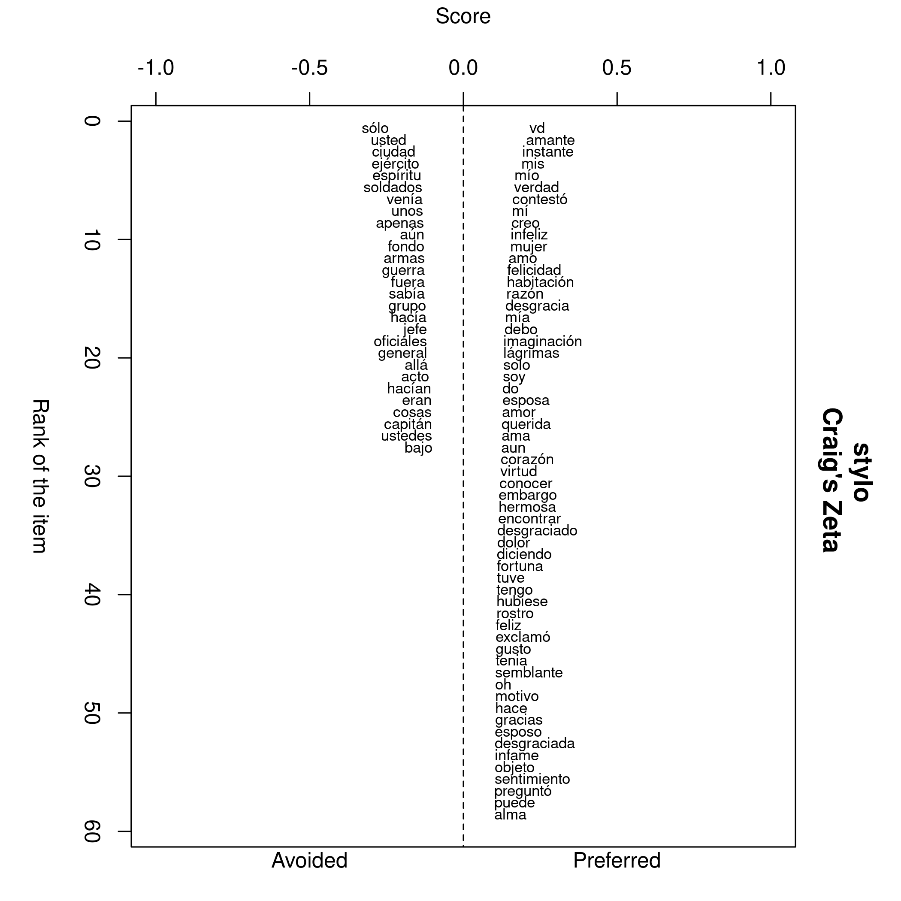 |
words preferred and avoided + sentimental - historical |
Analysis: novela americana
|
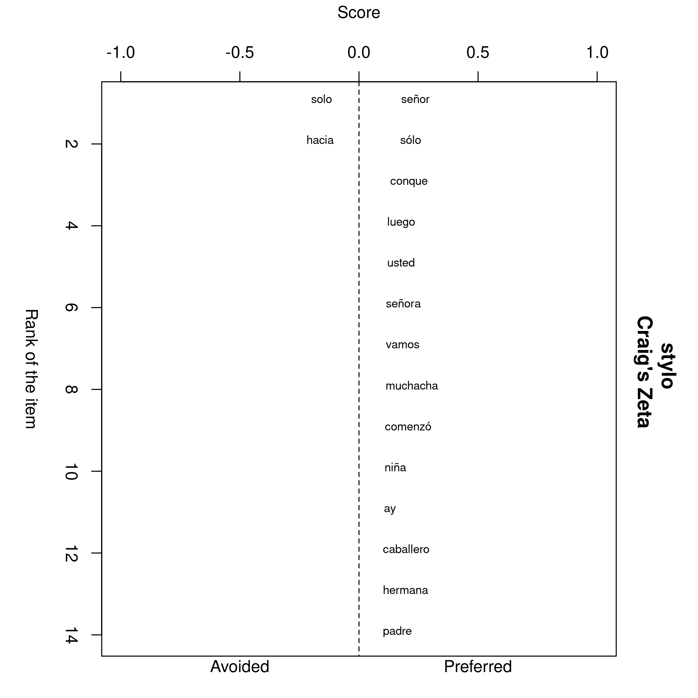 |
Analysis: identity types
| property | novela original | novela americana | novela mexicana | novela argentina | novela cubana |
|---|---|---|---|---|---|
| period | + early | x | x | + late | + early |
| country | + Mexico + Cuba - Argentina |
+ Cuba = Mexico - Argentina |
+ Mexico | + Argentina | + Cuba |
| continent of setting | + Europe | + America | + America | + America | + America |
| time period of setting | + recent past + contemp. - past |
+ recent past = past - contemp. |
+ recent past = past - contemp. |
+ contemp. = past - recent past |
+ recent past - contemp. - past |
| subgenre | + sentimental + political |
+ costumbres + historical |
+ costumbres + historical |
+ costumbres + social |
+ costumbres (+ sentimental) |
| literary current | + romantic + modernist |
+ realist - modernist |
+ realist - modernist |
+ naturalistic + realist |
+ romantic + naturalistic |
| narrative perspective | x | + third person | + third person | + first person | + third person |
| words preferred/avoided | + sentimental - historical |
+ forms of address x |
+ costumbres - sentimental |
+ people (forms of address) - ? |
+ costumbres (plantation) - military |
Conclusions
- tendencies can by observed for novels with different types of identity labels, e.g.:
- novela original: early, European setting, sentimental, romantic -> linguistic identity (Botrel 2001)
- novela americana: American setting, historical, costumbres, realist, set in recent past, third person narrator
- but: statistical significance unclear!
- more types of textual features could be tested
Thank you!
Slides at: https://hennyu.github.io/romtag_21/
Data at: https://github.com/hennyu/papers/tree/master/original_american_romtag21
References
- Botrel, Jean-François (2001): “La novela, género editorial (España, 1830-1930)”, in: La novela en España en los siglos XIX y XX. Historia, sociedad, búsqueda identitaria [Online]. Edited by Paul Aubert. Madrid: Casa de Velázquez: 35-51.
- Brushwood, John S. (1966). Mexico in its Novel. A Nation’s Search for Identity. Austin: University of Texas Press.
- Burrows, John (2007): “All the Way Through: Testing for Authorship in Different Frequency Strata”, in: Literary and Linguistic Computing 22 (1): 27-47. DOI: 10.1093/llc/fqi067
- Craig, Hugh and Arthur F. Kinney (2009). Shakespeare, Computers, and the Mystery of Authorship. New York: Cambridge University Press.
- Eder, Maciej, Jan Rybicki, and Mike Kestemont (2016): “Stylometry with R: a package for computational text analysis”, in: R Journal 8 (1): 107-121.
- Hoover, David L. (2013): “Textual Analysis”, in: Literary Studies in the Digital Age. New York: MLA. https://dlsanthology.mla.hcommons.org/textual-analysis/.
- Lindstrom, Naomi (2004). Early Spanish American Narrative. Austin: University of Texas Press.
- Sommer, Doris (1993). Foundational Fictions. The National Romances of Latin America. Berkeley: University of California Press.